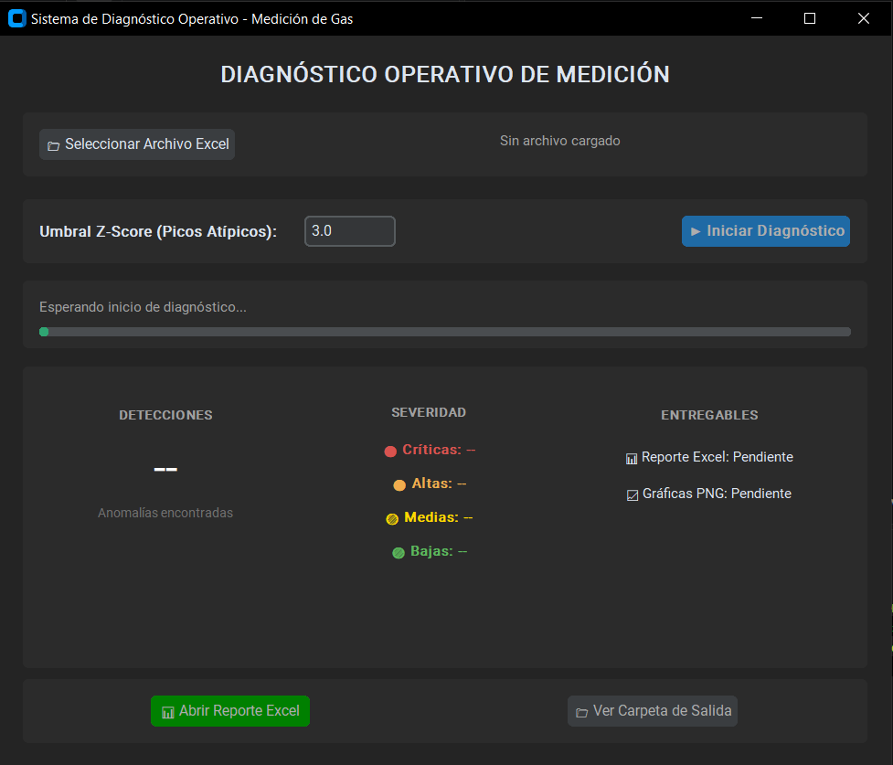
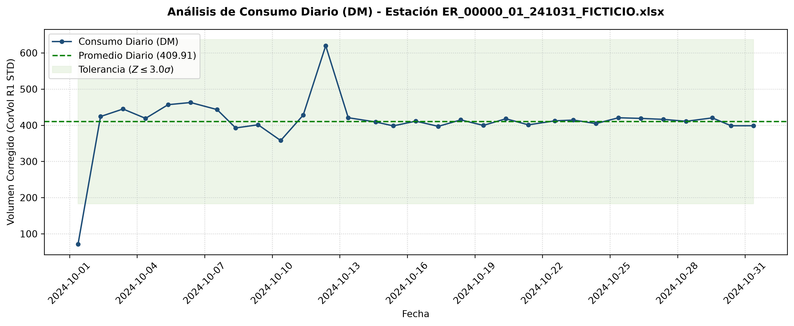
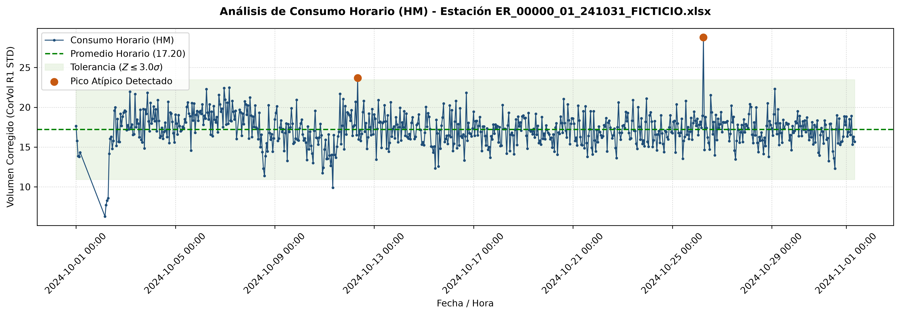

GasVigia — Diagnóstico Operativo de Medición de Gas Natural
Aplicación de escritorio en Python que analiza registros horarios (HM) y diarios (DM) de estaciones de medición de gas natural, detectando automáticamente alarmas, caídas de consumo y picos atípicos mediante un motor de reglas y análisis estadístico (Z-Score).
Flujo del Sistema
Del archivo del computador de flujo al reporte ejecutivo, en tres etapas.
Entrada y Validación
Registros del Computador de Flujo
- Validación de integridad del archivo
- Verificación de hojas HM / DM
- Validación del esquema de columnas
Motor de Análisis
Reglas de Negocio + Z-Score
- Normalización de fechas (corrige bug del equipo)
- 5 reglas de negocio independientes
- Detección estadística de anomalías (Z-Score)
Salidas
Reporte y Diagnóstico Visual
- Reporte ejecutivo con semáforo de severidad
- Gráficas de control estadístico
- Interfaz gráfica de escritorio

01. Problemática
Los computadores de flujo de las estaciones de gas exportan archivos Excel con cientos de registros de presión, temperatura, volumen corregido, alarmas y eventos. Revisar manualmente esta información para detectar anomalías operativas es lento y propenso a pasar por alto patrones ocultos en las series de tiempo.
El reto principal: Automatizar la lectura y el análisis estadístico de registros horarios y diarios para identificar desviaciones operativas de forma oportuna, entregando un diagnóstico confiable sin intervención manual.
02. Solución Propuesta
Se diseñó una arquitectura por capas inspirada en el enfoque hexagonal, donde cada módulo tiene una única responsabilidad. El motor de reglas es extensible: cada regla de negocio vive en su propio archivo y comparte un contrato uniforme, lo que permite agregar nuevas reglas sin modificar el orquestador central.
- Separación por capas: modelos, lectura/validación de datos, motor de análisis, generación de reportes y visualización, cada uno desacoplado del resto.
- Reglas independientes: alarmas, picos de eventos, consumo cero y picos atípicos (diarios y horarios), cada una en su propio módulo.
- Pruebas unitarias: 25 pruebas con pytest cubriendo reglas de negocio, validaciones y normalización de fechas.
GasVigia/
│
├── config/ # Rutas, columnas, umbrales y estilos
├── src/
│ ├── modelos/ # Estacion, Observacion, Metadatos
│ ├── core/ # Lectura de Excel y normalización de fechas
│ ├── validaciones/ # Pipeline de validación (3 etapas)
│ ├── analisis/
│ │ ├── motor_analisis.py # Orquestador de las 5 reglas
│ │ └── reglas/ # Una regla de negocio por archivo
│ ├── reportes/ # Generador del reporte Excel (openpyxl)
│ ├── visualizacion/ # Gráficas de control (matplotlib)
│ └── ui/ # Interfaz gráfica (CustomTkinter)
│
├── tests/ # 25 pruebas unitarias (pytest)
└── requirements.txt03. Implementación: un bug real del equipo de medición
Durante el análisis de los registros se detectó una inconsistencia real del computador de
flujo: para los primeros doce días de cada mes, el equipo invierte día y mes en las fechas
almacenadas como tipo DATE. Sin corregirlo, cualquier análisis de series de
tiempo quedaría desalineado justo en ese rango de fechas.
def _normalizar_fecha_excel(valor: datetime) -> datetime:
"""
Corrige fechas almacenadas como tipo DATE.
El computador de flujo invierte día y mes para
los primeros doce días del mes.
Ejemplo:
Valor almacenado: 2024-12-10
Valor corregido: 2024-10-12
"""
# Si alguno de los valores es mayor a 12,
# no existe posibilidad de inversión.
if valor.day > 12 or valor.month > 12:
return valor
return valor.replace(month=valor.day, day=valor.month)Con las fechas ya normalizadas, el motor de análisis ejecuta las 5 reglas de negocio sobre cada estación y clasifica cada hallazgo por severidad, el mismo semáforo de colores que se incrusta en el reporte Excel final:
| Regla | Hoja | Severidad | Resultado |
|---|---|---|---|
Alarmas en sitio |
HM | CRÍTICA | 3 observaciones |
Consumo Cero |
HM | ALTA | 1 observación |
Picos Atípicos (DM) |
DM | ALTA | 2 observaciones |
Picos de Eventos |
DM | MEDIA | 5 observaciones |
Registro Duplicado |
DM | BAJA | 1 observación |
04. Resultados e Impacto
El sistema entrega un diagnóstico operativo completo sin intervención manual: desde la lectura del Excel crudo hasta un reporte ejecutivo con gráficas incrustadas, ejecutable desde una interfaz de escritorio pensada para personal no técnico.


Reglas de negocio automatizadas e independientes
Pruebas unitarias (pytest) sobre reglas y validaciones
Detección estadística de picos, no umbrales fijos